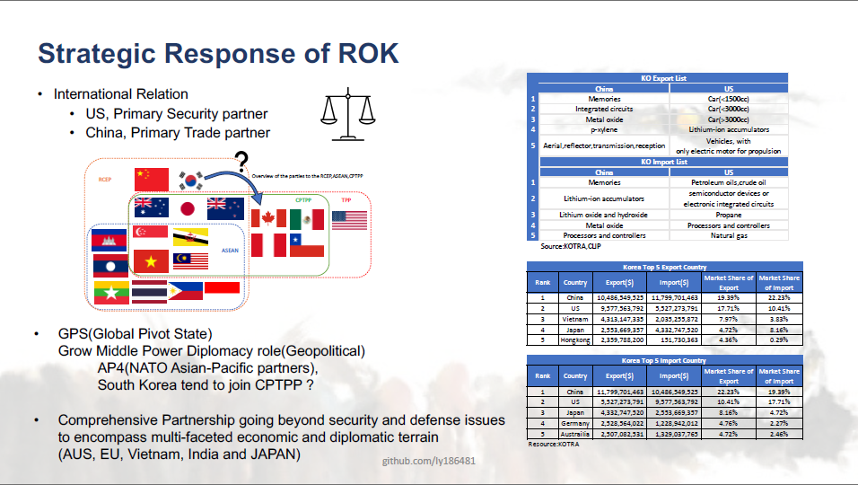
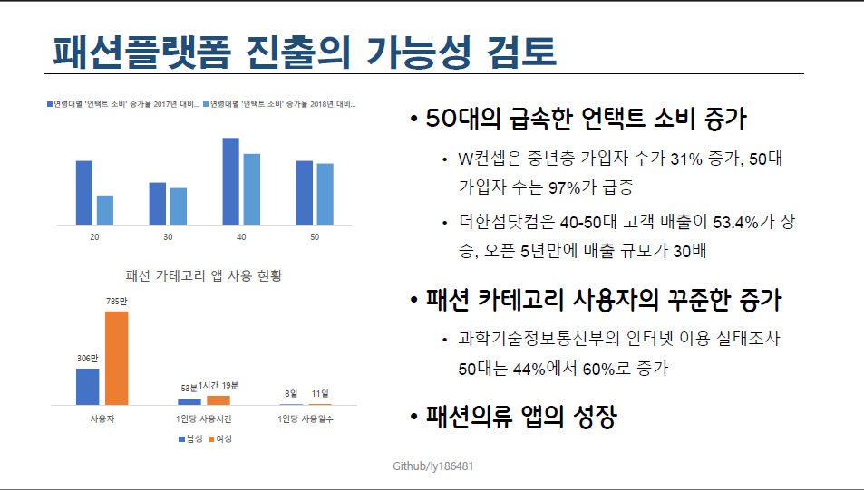
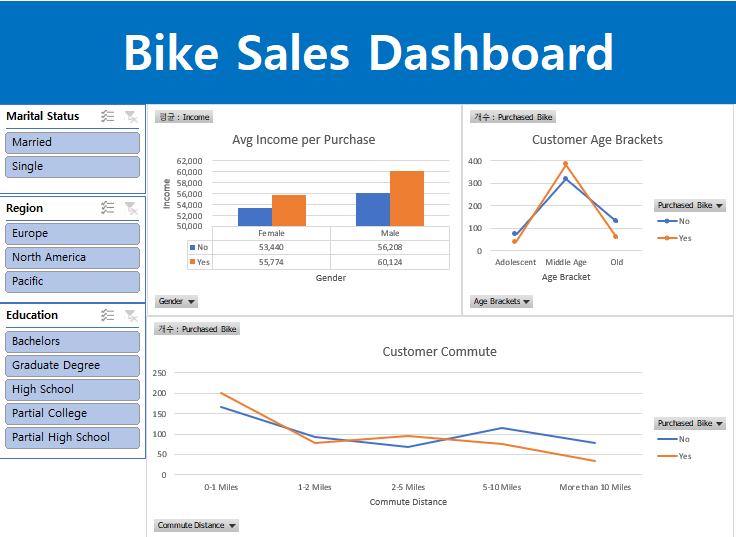
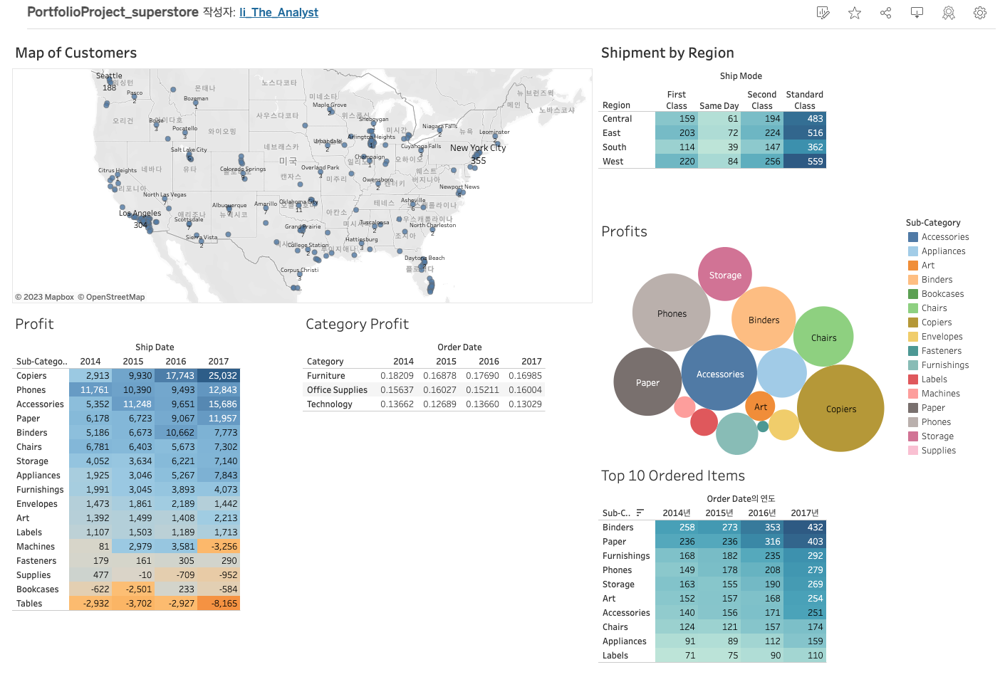
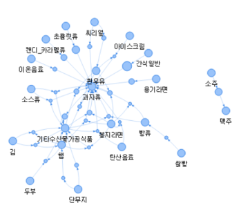

Economics & Business Strategy Research
Reading the signal inside economic & business data.
I'm Li Yu, an economics researcher (M.A.) working across policy strategy, business analytics, and data visualization — turning raw datasets into decisions stakeholders can act on.
About
Grounded in economics, built for strategy.
My work sits at the intersection of applied economics and business strategy — from labor economics research on unemployment and mental health, to strategic analysis for national policy, to dashboards that help retail teams make faster decisions.
Across research institutes and industry, I've focused on one question: what does the data actually tell a decision-maker to do next?
— Li Yu
Research
Thesis Paper
Mental Health and Unemployment Duration: Evidence Using Duration Analysis
This research examines how mental health status affects the length of unemployment spells, applying duration (survival) analysis — including the Kaplan–Meier estimator and Cox proportional hazards model — to estimate how mental health influences the hazard rate of exiting unemployment over time.
* 위 요약은 예시 문구입니다. 실제 논문 초록으로 교체해 주세요.
Case Studies
Five problems, five decisions.
Each case follows the same research discipline: define the stakeholder's question, prepare the data, analyze it rigorously, then share a recommendation that can be acted on.

R.O.K. Strategy toward US–China Competition
- Ask
- How should the Republic of Korea build a long-term strategy given an unpredictable US–China relationship, in the context of G20 data-governance discussions?
- Prepare
- Focused on the 2023 G20 Summit (India) agenda on data governance and financial cooperation.
- Process
- Analyzed the data-governance frameworks discussed at the G20 to identify where Korea holds a structural advantage.
- Share
- Presented a positioning strategy highlighting Korea's advantage in data-governance policy leadership.

Fashion Brand Business Analysis
- Ask
- How is the fashion e-commerce market trending, and how could cloud services support the shift from offline to online retail?
- Prepare
- Gathered e-commerce market and target-customer data alongside cloud-service adoption trends in retail.
- Process
- Compared offline vs. online channel economics to identify where cloud infrastructure reduces cost and improves speed to market.
- Share
- Recommended a phased cloud migration path prioritized by channel ROI.

Bike Membership Dashboard
- Ask
- How can the business convert regular riders who are not yet members into paying members?
- Prepare
- Used internal ridership data, including commute distance and marital status, for members and non-members.
- Process
- Compared usage patterns between membership and non-membership segments to isolate the strongest conversion signals.
- Share
- Delivered an interactive dashboard highlighting the highest-propensity non-member segments to target.

Superstore Expansion Dashboard
- Ask
- Where should the retailer expand its store footprint next?
- Prepare
- Used internal sales and store-performance data to map the current store outlook.
- Process
- Modeled expansion scenarios focused on maximizing customer revisit rate alongside new-branch performance.
- Share
- Presented a prioritized list of expansion regions with an interactive Tableau dashboard.

Machine Learning: Food Retail Basket Analysis
- Ask
- How can the retailer attract and retain more loyal customers across age groups?
- Prepare
- Built new consumer segments based on shifting age-group purchase behavior.
- Process
- Applied frequency and association-rule mining (R's
arules/arulesViz) to surface product pairings by segment. - Share
- Recommended segment-specific promotions based on the strongest association rules found.
Skills
Toolkit.
Analytics & Statistics
- Duration / Survival Analysis
- Econometrics
- R (arules, arulesViz)
- Python
Data Visualization
- Tableau
- Dashboard Design
- Stakeholder Reporting
Tools
- SQL
- Excel / VBA
- Git & GitHub
Business Strategy
- Market & Policy Analysis
- Segmentation Strategy
- Expansion Planning